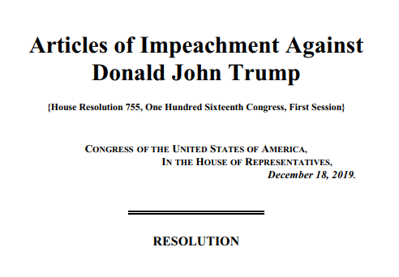

The ire of impeachment

One year ago, I wrote that President Trump’s constitutionally controversial acts could lead to his downfall.
My column, “The cost of crisis,” suggested Trump’s declaration of a national emergency to secure funding to “build the wall” – enacted Feb. 15, 2019 – could sway independent voters away from him during his bid for reelection.
And so the cost for him, I wrote, was 2020.
One year later, Trump has become the third president in American history to be impeached – largely due to his continually controversial acts.
House Democrats, responding to a U.S. election scandal involving Trump and the Ukrainian government, accused the president of abuse of power and obstruction of Congress. Their majority vote adopted two articles of impeachment against him Dec. 18.
However, their effort to actually remove the president was never realistically the goal – given Trump’s grip over the Republican majority Senate.
Trials there unsurprisingly ended with his acquittal on both articles Feb. 5. Though, Republican Mitt Romney did break the partisan line by voting guilty on abuse of power.
Regardless of the odds, House Democrats pushed the impeachment process forward.
Elijah Cummings, former chair of the House Oversight Committee, said, “When the history books are written about this tumultuous era, I want them to show that I was among those in the House of Representatives who stood up to lawlessness and tyranny.”
His quote was included in Speaker Nancy Pelosi’s speech made before the impeachment debate was introduced to the House.
“If we do not act now, we would be derelict in our duty,” she argued.
“It is tragic that the president’s reckless actions make impeachment necessary. He gave us no choice,” she added.
Republicans think differently.
Mitch McConnell, majority leader of the Senate, said, “The House’s vote yesterday was not some neutral judgment that Democrats came to reluctantly.
“It was the pre-determined end of a partisan crusade that began before President Trump was even nominated, let alone sworn in,” he said, referring to Democratic members of Congress who voiced their desire to impeach the president before his inauguration in 2017.
“This week wasn’t even the first time House Democrats have introduced articles of impeachment. It was the seventh time,” he added.
The opinions of the Congressional leadership largely reflect those of their parties back home, according to a recent national opinion poll by NBC and the Wall Street Journal, released Feb. 2.
The polling suggested that 84% of Democrats were supportive of Trump’s removal, calling it “necessary,” “justified,” and “warranted” when asked what one word they’d use to describe it.
Republicans, meanwhile, disapproved of Trump’s removal by a rate of 94%, using words such as “ridiculous,” “wasteful,” and “sham” to describe it.
Neither set of data is particularly surprising.
What matters most over the impeachment issue – just as it did during the national emergency issue last year – is where independent voters stand.
As controversial and divisive as President Trump may be, the impeachment process is just as controversial and divisive of a method Democrats used.
Which is why independents were divided over Trump’s impeachment in the opinion poll, with 50% reported as opposing his removal and 45% approving it.
The polls did favor disapproval, however. And as an acquitted Trump attacks Democrats for trying to remove him prior to the election, disapproval over his impeachment may rise further.
“‘I don’t think we should go down that path because it divides the country… it’s just not worth it.’ That was Nancy Pelosi a year ago, right?” Trump rhetorically asked after his acquittal.
“Instead of wanting to heal our country and fix our country … they want to destroy our country,” he said of their impeachment effort.
It’s a statement that independent voters may take with them to the polls.
[Editor’s Note: The referenced column, “The cost of crisis,” can be found in the Feb. 22, 2019 edition of The Gatepost.]
❱ Read this article on The Gatepost’s old website via Internet Archive »
Related: The Cost of Crisis
By: Evan Lee, staff writer
Originally published in The Gatepost
February 22, 2019
In the wake of the longest U.S. government shutdown in history, President Trump issued an ultimatum to Congress - either reach a deal on his demand for $5.7 billion in funding for a southern border wall by Feb. 15, or face the consequences.
“If we don’t get a fair deal from Congress, the government will either shut down, again, or I will use the powers afforded to me under the laws of the Constitution of the United States to address this emergency,” Trump announced on Jan. 25.
Congress was given three weeks to work out a compromise over the border issue after a bipartisan resolution to temporarily fund the government was passed.
Yet, as the days dragged on without very much cooperation on either side, the shadow of a second shutdown loomed dangerously close
“I think the talks are stalled right now,” said Senator Richard Shelby on Feb. 10.
“I'm not confident we're going to get there,” he added.
But miraculously, under bipartisan pressure to escape the shutdown’s enclosing shadow, Congressional negotiators managed to come together during the final week and struck a deal acceptable for both sides.
Without a moment’s delay, their compromise budget bill swiftly passed through both houses and received the presidential signature on the very last day before funding ran out again.
Second shutdown averted.
Unfortunately, the deal doesn’t include an end to the battle over the southern border, which was at the crux of the record breaking 35 day shutdown that preceded this all.
The final budget, which will fund the government for the rest of the fiscal year, falls well short on Trump’s original border funding demand, allocating just $1.375 billion for his wall.
It’s enough to raise about 55 miles of fencing along the Rio Grande, according to the Wall Street Journal, but that’s not nearly enough to appease Trump’s loyal base.
Conservative talk show host Sean Hannity slammed the agreement as a “garbage new compromise” that is “typical of the D.C. sewer” during his Fox News program.
He went on to encourage Trump to make good on his earlier threats of using executive power to “address this emergency” as a way of raising all of the funds necessary to keep his campaign promise to build the wall.
“This is the time, that is the necessity,” Hannity argued.
And Trump agreed.
On the same day that he signed the bipartisan approved budget into law, Trump declared a national emergency over border security.
It’s an act that has received instantaneous bipartisan disapproval. Congressional Democrats are furious at Trump’s emergency declaration which they deem as an unconstitutional use of force, though this isn’t very surprising coming from Trump’s opposition.
What’s more stunning is that many Congressional Republicans have also come to share that same opinion.
“Declaring a national emergency is unnecessary, unwise, and inconsistent with the U.S. Constitution, ” said Republican Senator Lamar Alexander.
Yet despite numerous concerns and criticisms from politicians within his own party, Trump remains set in his determination to build the wall at all costs.
Unfortunately for him, the cost may be 2020.
Six out of ten Americans believe that Trump’s national emergency is unnecessary and that it’s a misuse of his executive power, according to a recent NPR/PBS NewsHour/Marist opinion poll.
Republican approval still remains high in said poll, as does Democratic disapproval - these are both givens - but what’s most important is where non partisan voters stand.
According to the poll, only 33% of independents approve of Trump’s national emergency, compared to 63% who disapprove of it. And as the lawsuits begin to pile up against him, a coalition of 16 states have already filed one, it is unlikely that such a constitutional controversy will sway many independents in Trump’s favor.
“He's maintaining his base and little else," said Lee Miringoff, the Director of Marist Institute in regard to the poll’s findings.
In 2016, president elect Trump gave thanks to the “silent majority,” a mass of unspoken voters whom he said had become disenchanted of the games played by the Washington establishment.
That silent majority, he proudly proclaimed during numerous rallies, had helped him win the presidential election.
But now, after having played political games of his own, will he still be able to count on the silent majority’s vote in 2020?
We shall see.
❱ Read this article in The Gatepost’s print edition via Issuu - Page 8 »